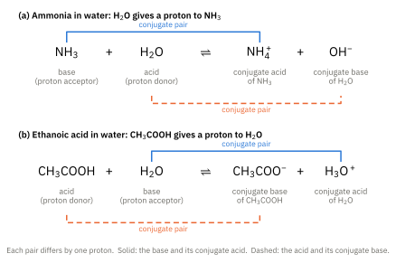
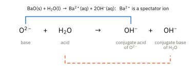
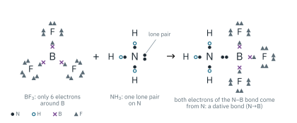
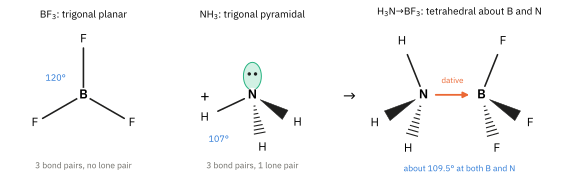
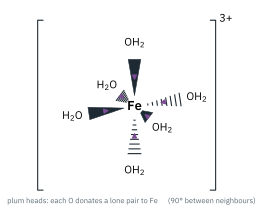
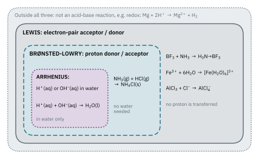
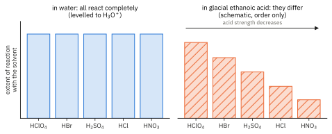

Topic 4 · Theories of Acids and Bases Part 1
Theories of Acids and Bases
On this page
Introduction
What is an acid? The answer depends on whom you ask, and when. Between 1887 and 1923, chemists produced three definitions, each wider than the one before:
- Arrhenius (1887): acids and bases in water, defined by the ions they produce.
- Brønsted-Lowry (1923): acids and bases defined by the transfer of a proton.
- Lewis (1923): acids and bases defined by an electron pair.
None of them is wrong. Each newer theory keeps everything the older one could explain and adds reactions the older one could not. In practice, use the simplest theory that does the job.
1. Arrhenius theory
Svante Arrhenius worked with solutions in water. His theory of acids and bases came out of his theory that many substances split into ions when they dissolve.
- An Arrhenius acid is a substance that produces hydrogen ions, H+(aq), in water.
- An Arrhenius base is a substance that produces hydroxide ions, OH−(aq), in water.
For example, in water:
HCl(g) → H+(aq) + Cl−(aq)
NaOH(s) → Na+(aq) + OH−(aq)
Neutralisation is then just H+ meeting OH−. For acids such as HCl, HNO3 and H2SO4 with alkalis such as NaOH and KOH, the ionic equation is always the same:1
H+(aq) + OH−(aq) → H2O(l)
In HNO3(aq) + KOH(aq) → KNO3(aq) + H2O(l), for example, K+ and NO3− take no part. They are spectator ions, and they are left out of the ionic equation.
A bare H+ ion is just a proton. It cannot exist on its own in water: it is always bonded to a water molecule as the hydronium ion, H3O+.2 So H+(aq) and H3O+(aq) mean the same thing in equations. Use whichever the question uses.
Limitations of the Arrhenius theory
- It only works in water. Ammonia and hydrogen chloride gases meet to form a white smoke of ammonium chloride. This is clearly acid + base → salt, but there is no water and no H+(aq) or OH−(aq), so Arrhenius's theory cannot describe it.
NH3(g) + HCl(g) → NH4Cl(s)
- It cannot explain how bases without OH work. Arrhenius pictured a base releasing OH− ions that it already contains, as NaOH does. Ammonia gives an alkaline solution, yet it has no OH to release: it produces OH− only by taking H+ from water, which the theory cannot describe. To fit ammonia into the Arrhenius picture it was written as “ammonium hydroxide”, NH4OH. No ionic compound NH4+OH− has ever been isolated: aqueous ammonia is mostly NH3 molecules hydrogen-bonded to water.
2. Brønsted-Lowry theory
In 1923, Johannes Brønsted in Denmark and Thomas Lowry in England, working independently, moved the focus from the ions in water to the proton itself. An H+ ion is just a proton, so:
An acid-base reaction is therefore a proton transfer. An acid cannot give away its proton unless a base is there to take it, so acids and bases always react in partners. To accept a proton, a base must have a lone pair of electrons to bond to it. (Hold on to that idea: it is the key to Section 3.)
Nothing in this definition needs water, so it covers the reaction that defeated Arrhenius. In NH3(g) + HCl(g) → NH4Cl(s), HCl donates a proton to NH3. HCl is the acid, NH3 is the base, and the product is the ionic solid NH4+Cl−.
Conjugate acid-base pairs
When an acid gives away its proton, what is left behind can take a proton back, so it is a base. It is called the conjugate base of the acid. In the same way, when a base accepts a proton it becomes the conjugate acid of that base.
So every Brønsted-Lowry reaction contains two conjugate pairs:
acid 1 + base 2 ⇌ conjugate base 1 + conjugate acid 2
Two examples, with the pairs marked:
NH3(aq) + H2O(l) ⇌ NH4+(aq) + OH−(aq)
Base = NH3 (proton acceptor)
Acid = H2O (proton donor)
Conjugate acid = NH4+ (of NH3)
Conjugate base = OH− (of H2O)
CH3COOH(aq) + H2O(l) ⇌ CH3COO−(aq) + H3O+(aq)
Acid = CH3COOH (proton donor)
Base = H2O (proton acceptor)
Conjugate acid = H3O+ (of H2O)
Conjugate base = CH3COO− (of CH3COOH)

Water: acid or base?
Look at water in Fig 1. With ammonia it gives away a proton (an acid); with ethanoic acid it takes one (a base). A species that can act as either an acid or a base is amphoteric.3 Water is the most important example: it acts as a base towards acids such as HCl and CH3COOH, and as an acid towards bases such as NH3.4
Ions that still carry a proton and can also accept one are amphoteric too, for example HCO3−, HSO4− and H2PO4−. Hydrogencarbonate reacts with both acids and alkalis:
As a base: HCO3−(aq) + H3O+(aq) → H2CO3(aq) + H2O(l)
As an acid: HCO3−(aq) + OH−(aq) → CO32−(aq) + H2O(l)
Two more examples: HCl and BaO
Hydrogen chloride gives its proton to water:5
HCl(g) + H2O(l) → H3O+(aq) + Cl−(aq)
Acid = HCl (proton donor)
Base = H2O (proton acceptor)
Conjugate acid = H3O+ (of H2O)
Conjugate base = Cl− (of HCl)
Barium oxide is a base, but which particle in it actually takes the proton? It is the oxide ion, O2−. Each O2− takes a proton from a water molecule:
BaO(s) + H2O(l) → Ba2+(aq) + 2OH−(aq)
O2−(s) + H2O(l) → OH−(aq) + OH−(aq)
Base = O2− (proton acceptor)
Acid = H2O (proton donor)
Conjugate acid = OH− (of O2−)
Conjugate base = OH− (of H2O)
The two OH− ions are identical, but they come from different places: one is the O2− that gained a proton, the other is the water molecule that lost one.

Not only in water
Brønsted-Lowry theory works in any solvent, or with no solvent at all. In the mixture of concentrated nitric and sulfuric acids used to nitrate benzene (Topic 11.4), sulfuric acid is the stronger proton donor and protonates nitric acid:6
H2SO4 + HNO3 ⇌ HSO4− + H2NO3+
Here nitric acid is acting as a base. Whether a substance behaves as an acid or a base depends on what it is reacting with.
Limitation of the Brønsted-Lowry theory. It needs a proton. Boron trifluoride reacts with ammonia, and the ammonia is used up just as if it had been neutralised, but no proton moves from one molecule to the other (Section 3). Brønsted-Lowry theory has no way to describe this.
3. Lewis theory
Also in 1923, Gilbert N. Lewis looked at the electrons rather than the proton. When a base accepts a proton, it uses a lone pair to form a new bond to the H+. Lewis said that this is what being a base really means:
The protonation of ammonia fits this at once:
NH3 + H+ → NH4+
N donates its lone pair to the H+. NH3 is the Lewis base and H+ is the Lewis acid. (Once NH4+ has formed, all four N–H bonds are identical: Chemical Bonding Part 1.) In the same way, H2O + H+ → H3O+.
So every Brønsted-Lowry base is also a Lewis base, because to accept a proton it must donate a lone pair; and every Brønsted-Lowry reaction is also a Lewis reaction, with the proton as the electron-pair acceptor. Lewis theory adds the reactions in which no proton is involved at all.
The 9476 example: BF3 and NH3
Boron is in Group 13 and has three outer electrons. In boron trifluoride, BF3, its three B–F bonds leave boron with only six electrons in its outer shell, two short of an octet. Boron has an empty orbital that can accept a pair of electrons, so BF3 is a Lewis acid. Ammonia has a lone pair on N, so NH3 is a Lewis base. When they meet, the lone pair on N forms a dative bond to B:
BF3 + NH3 → H3N→BF3

The shapes change as well, exactly as the VSEPR rules of Chemical Bonding Part 2 predict:
- Before. BF3 has three bond pairs and no lone pair about B: trigonal planar, 120°. NH3 has three bond pairs and one lone pair about N: trigonal pyramidal, 107°.
- After. B now has four bond pairs (three B–F and the dative N→B), so the arrangement about B is tetrahedral, about 109.5°. N also has four bond pairs and no lone pair: tetrahedral about N, about 109.5°.

Other Lewis acids and bases
Good Lewis acids are of three kinds.7
- Molecules whose central atom has an incomplete outer shell, such as BF3 and AlCl3. AlCl3 is even a Lewis acid towards itself, forming Al2Cl6 (Chemical Bonding Part 1). With chloride ions it forms AlCl4−: AlCl3 + Cl− → AlCl4−. In the chlorination of benzene (Topic 11.4), AlCl3 acts as a halogen carrier in the same way, accepting Cl− from Cl2 to leave the electrophile.
- Metal ions, especially small, highly charged ones, which attract lone pairs from water or other molecules. For example, each of six water molecules donates a lone pair from O to an Fe3+ ion:
Fe3+ + 6H2O → [Fe(H2O)6]3+

- The proton, H+, as above.
Lewis bases are simply species with a lone pair to donate: NH3, H2O, OH−, Cl− and F−, for example (BF3 + F− → BF4−).
The three theories side by side
| Arrhenius (1887) | Brønsted-Lowry (1923) | Lewis (1923) | |
|---|---|---|---|
| Acid | produces H+(aq) in water | proton donor | electron-pair acceptor |
| Base | produces OH−(aq) in water | proton acceptor | electron-pair donor |
| The reaction | H+(aq) + OH−(aq) → H2O(l) | proton transfer; two conjugate pairs | a dative bond forms; the product is an adduct |
| Works in | water only | any solvent, or none | any solvent, or none; no proton needed |
| Example | HCl(aq) + NaOH(aq) | NH3(g) + HCl(g) | BF3 + NH3 |
| Cannot describe | NH3(g) + HCl(g); how NH3 acts as a base | BF3 + NH3; Fe3+ + 6H2O | (the widest of the three) |

Which theory should you use? The simplest one that fits. For reactions in water, Brønsted-Lowry is usually the most useful, because it lets you pick out the conjugate pairs; Topic 10.1 (acid-base equilibria) is built on it.8 Keep Lewis theory for reactions with no proton to transfer. And remember that not every reaction of an acid is an acid-base reaction: Mg + 2HCl → MgCl2 + H2 is a redox reaction (Mg is oxidised, H+ is reduced).

Additional information
- The equation is written with a single arrow because neutralisation goes essentially to completion. Water itself does split into H+ and OH− to a tiny extent; that equilibrium (Kw) is in Topic 10.1. ↩
- H3O+ is itself surrounded by further water molecules. Its systematic name is oxidanium; “hydronium” and “oxonium” are both common. ↩
- For proton transfer the more precise word is amphiprotic. “Amphoteric” also covers oxides such as Al2O3 that react with both acids and bases (Topic 5). ↩
- Water also transfers protons to itself: 2H2O(l) ⇌ H3O+(aq) + OH−(aq). The consequences, Kw and pH, are in Topic 10.1. ↩
- How completely an acid or base reacts with water (strong or weak) is Topic 10.1. Here we only need to identify who gives and who takes the proton. ↩
- H2NO3+ then loses a water molecule to give the nitronium ion, NO2+, the electrophile that attacks benzene. Overall: HNO3 + 2H2SO4 → NO2+ + H3O+ + 2HSO4−. ↩
- In organic chemistry (Topic 11.3), an electrophile is a Lewis acid and a nucleophile is a Lewis base: the nucleophile donates a lone pair to form a new bond. ↩
- Water as an acid and a base, pH, Ka and Kb, and the difference between strong and weak acids, are all in Topic 10.1, Acid-Base Equilibria. ↩